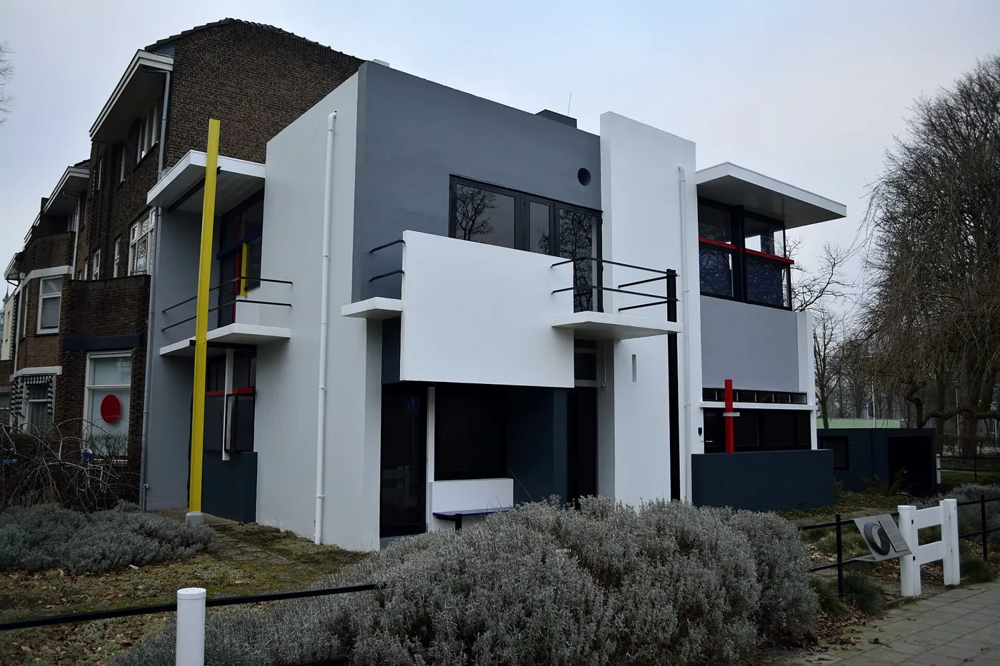
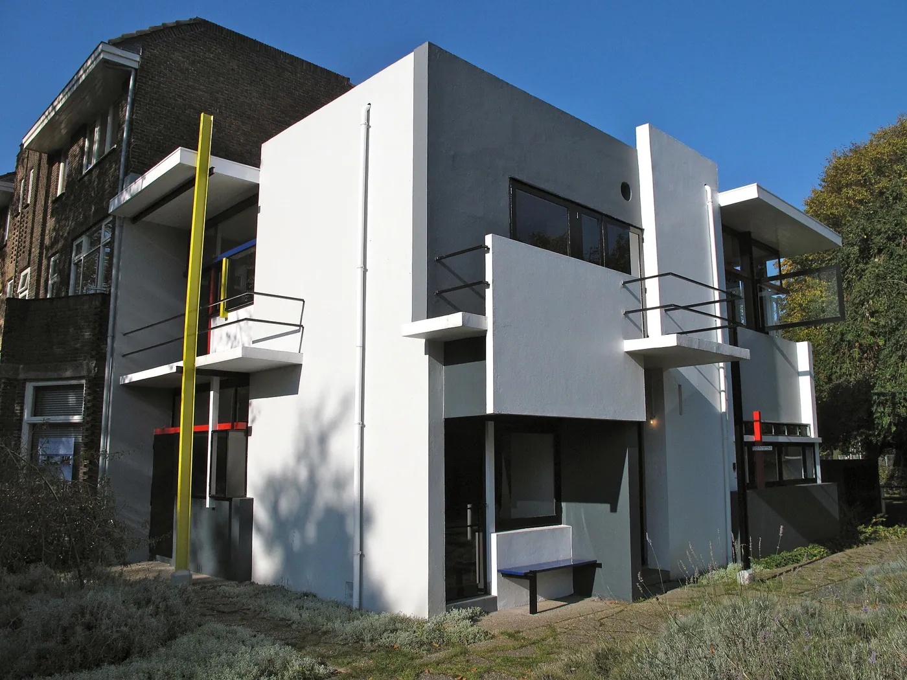
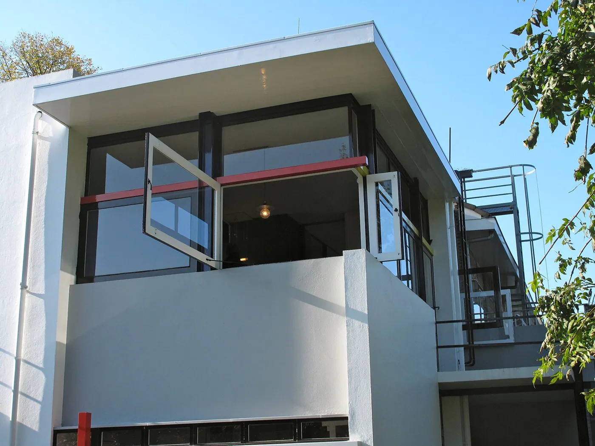
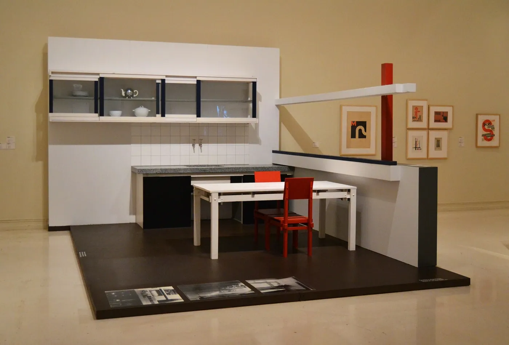
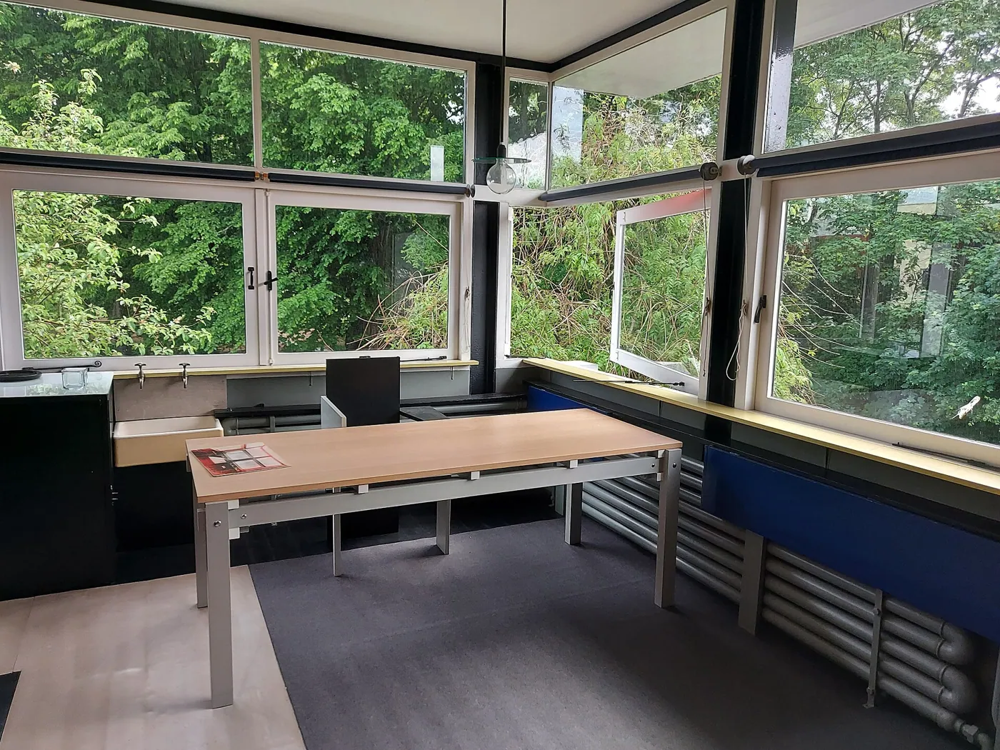
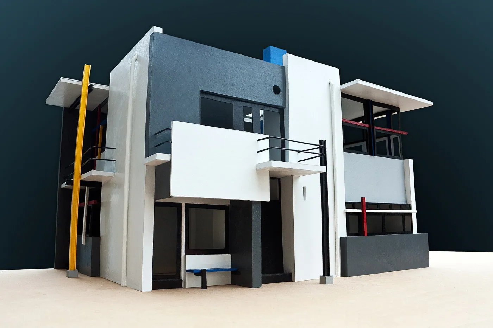
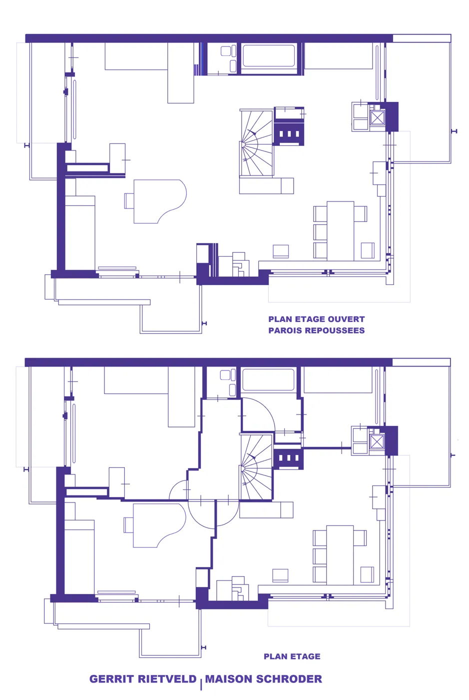

1/8 · Exterior · Het Rietveld Schröderhuis in Utrecht, 2014Photo: Steven Lek · CC BY-SA 4.0 · source
2/8 · ExteriorPhoto: ErikHonig · CC BY-SA 3.0 nl · source
3/8 · ExteriorPhoto: ErikHonig · CC BY-SA 3.0 nl · source4/8 · Interior · Rietveld Schröder House, Prins Hendriklaan 50, Utrecht, NetherlandsPhoto: Ludvig14 · CC BY-SA 4.0 · source
5/8 · Interior · Rietveld Schröder House, Prins Hendriklaan 50, Utrecht, NetherlandsPhoto: Ludvig14 · CC BY-SA 4.0 · source
6/8 · Detail · Rietveld Schröder House, Prins Hendriklaan 50, Utrecht, NetherlandsPhoto: Ludvig14 · CC BY-SA 4.0 · source
7/8 · Drawing · Gerrit Rietveld, Maison Schröder, MaquettePhoto: Gavin Schafer · CC BY 2.0 · source
8/8 · Drawing · Gerrit Rietveld, Maison Schröder, plan étage avec variante parois repousséesPhoto: Jchancerel · CC BY-SA 4.0 · sourceHouse · Modernism
Rietveld Schröder House
Gerrit Rietveld · Utrecht, Netherlands · 1924
Key featuresDe Stijl in three dimensions: floating planes and sliding partitions.
- Architect
- Gerrit Rietveld
- Place
- Utrecht, Netherlands
- Year
- 1924
- Typology
- House
- Movement
- Modernism
- Region
- Europe
See it on the wall